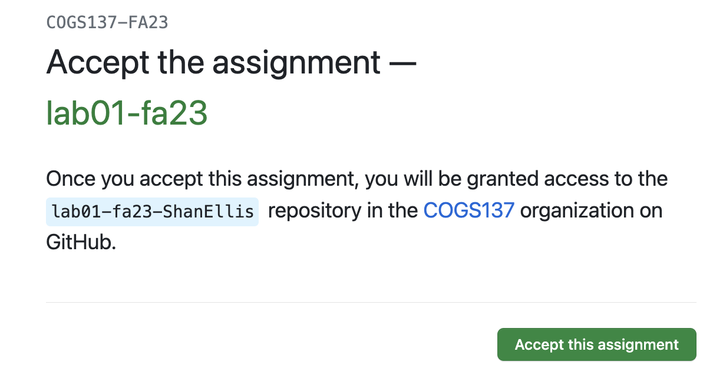
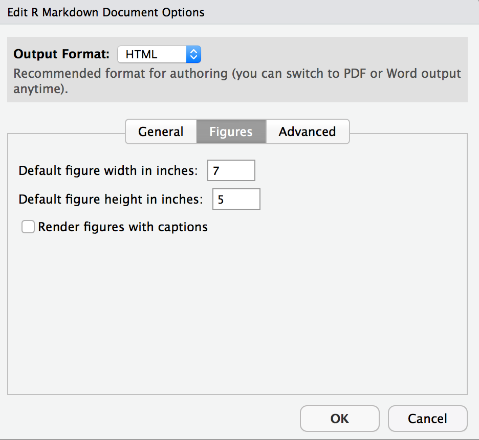

git config --global user.email "your email"
git config --global user.name "your name"Lab 01 - Tooling
Introduction
The main goal of this lab is to introduce you to R and RStudio, which we will be using throughout the course to learn and practice programming and analyze data.
R is the name of the programming language itself and RStudio is a convenient interface.
An additional goal is to introduce you to git and GitHub, which is the collaboration and version control system that we will be using throughout the course.
git is a version control system (like “Track Changes” features from Microsoft Word on steroids) and GitHub is the home for your Git-based projects on the internet (like DropBox but much, much better).
As the labs progress, you are encouraged to explore beyond what the labs say directly; a willingness to experiment will make you a much better programmer. Before we get to that stage, however, you need to build some basic fluency in R. Today we begin with the fundamental building blocks of R and RStudio: the interface, reading in data, and basic commands.
You are encouraged to ask one another questions and work together, but each individual must turn in their own lab each week.
GitHub
If you have a GitHub account, be sure you know your username and password (you’ll need it later in this lab), and go ahead and move on to the next section.
If you do not yet have a GitHub account, create one at https://github.com/. Tips for selecting a username 1:
- Incorporate your actual name! People like to know who they’re dealing with. Also makes your username easier for people to guess or remember.
- Reuse your username from other contexts if you can, e.g., Twitter or Slack.
- Pick a username you will be comfortable revealing to your future boss.
- Shorter is better than longer.
- Be as unique as possible in as few characters as possible. In some settings GitHub auto-completes or suggests usernames.
- Make it timeless. Don’t highlight your current university, employer, or place of residence.
- Avoid words laden with special meaning in programming, like
NA.
GitHub Housekeeping
Note
Your email address is the address tied to your GitHub account and your name should be first and last name.
Before we can get started we need to take care of some required housekeeping. Specifically, we need to configure your git so that RStudio can communicate with GitHub…and so you do not have to type in your username and password every time you want to communicate with GitHub from RStudio. These steps will be demo-ed during lab and you’ll have time to walk through the steps!
Note
If you aren’t able to attend lab and get stuck here, there is a podcast recording from lecture on 9/29 from the COGS 137 Fa21 iteration where you can see these steps demo-ed.
Step 1: Email and Username
The first step requires two pieces of information: your email address and your name.
To do so, follow these steps:
- Go to the Terminal pane
- Type the following two lines of code, replacing the information in the quotation marks with your info:
For example, for me these are:
git config --global user.email "sellis@ucsd.edu"
git config --global user.name "Shannon Ellis"To confirm that the changes have been implemented, run the following:
git config --global user.email
git config --global user.nameStep 2: Generate ssh key
In the terminal, you’ll want to generate an ssh key by typing:
ssh-keygenAfter hitting enter/return to execute the above, you’ll press return/enter three times to bypass specifying a location and passphrase.
Step 3: Copy your ssh key
From the terminal type:
cat ~/.ssh/id_rsa.pubYou’ll want to highlight and copy the full result of this command. It will start with ssh-rsa and end with dsmlp.login.ucsd.edu.
Step 4: Let GitHub know your key
- In your browser, navigate to https://github.com/settings/keys
- Click “New SSH Key”
- Set title to DSMLP
- Paste what you copied in step 3 into the “Key” box
- Click “Add SSH Key”
Step 5: Finalize
Return to the terminal in RStudio and run the following command:
ssh git@github.comYou’ll then see a message like You've successfully authenticated, but GitHub does not provide shell access. At this point, you’re all set!
This will be the only time you have to do this. From here on out, you’ll be able to “communicate” with GitHub from RStudio without typing your username/password.
Cloning the lab
Each of your assignments will begin with the following steps. You saw these once in class and, they’re outlined in detail here again. Going forward each lab will start with a “Getting started” section but details will be a bit more sparse than this. You can always refer back to this lab for a detailed list of the steps involved for getting started with an assignment.
Click on the assignment link for this week’s lab on the Canvas homepage. You will have to Accept before proceeding. Refresh the page and follow the link to the repo created for you. This repo contains a template you can build on to complete your lab.

On this page on GitHub, click the URL provided for you. This will bring you to your copy of the repo on GitHub. Click on the green <> Code button to clone the repo. Be sure that SSH is selected and copy this URL.
Important
Be sure that any time you are copying a link from GitHub under the <>Code button, you select and use the ‘SSH’ URL as this is what will allow you to not have to type your username and password.
Go to datahub and open RStudio. Go to File > New Project… and select to create a New Project from Version Control. On the following menu, select Git.
Copy and paste the URL of your assignment repo into the “Repository URL” dialog box:
Hit Create Project. Open up lab-01.Rmd and continue through this lab. Your work/answers for this lab will be submitted in that document.
Warm up
Before we introduce the data, let’s warm up a bit…
Packages
In this lab we will work with two packages: datasauRus which contains the dataset, and tidyverse which is a collection of packages for doing data analysis in a “tidy” way.
These packages have already been installed for you. However, if they had not, you would need to run install.packages("tidyverse") and install.packages("datasauRus") before proceeding. Note that package installation happens a single time. But, any time you want to use a package (after it’s been installed), it has to be loaded, as we do below:
If you’d like to run your code in the Console as well you’ll also need to load the packages there. To do so, run the following in the console.
library(tidyverse)
library(datasauRus)You should be able to Knit your document and see the results.
Note that the packages are also loaded with the same commands in your R Markdown document.
YAML:
The top portion of your R Markdown file (between the three dashed lines) is called YAML. It stands for “Yet Another Markup Language”. It is a human-friendly data serialization standard for all programming languages. All you need to know is that this area is called the YAML (we will refer to it as such) and that it contains meta information about your document.
Open the R Markdown (Rmd) file in your project, change the author name to your name and knit the document. This will generate an HTML document.
Commiting changes:
Then Go to the Git pane in your RStudio on Datahub.
If you have made changes to your Rmd file, you should see it listed here. Click on it in this list and then click on Diff. This shows you the difference between the last committed state of the document and its current state that includes your changes. Be sure to also select your HTML document. Once you’re happy with these changes, write “Update author name” in the Commit message box and hit Commit.
You don’t have to commit after every change, this would get quite cumbersome. You should consider committing states that are meaningful to you for inspection, comparison, or restoration. In the first few assignments we will tell you exactly when to commit and in some cases, what commit message to use. As the quarter progresses, we will let you make these decisions.
Pushing changes:
Now that you have made an update and committed this change, it’s time to push these changes to the web! Or more specifically, to your repo on GitHub. Why? So that others can see your changes. And by others, we mean the course teaching team (your repos in this course are private to you and us, only).
In order to push your changes to GitHub, click on Push. Go check your repo on GitHub - you’ll see your updated documents there!
Exercises
Data
The data frame we will be working with today is called datasaurus_dozen2 and it’s in the datasauRus package. Actually, this single data frame contains 13 datasets, designed to show us why data visualization is important and how summary statistics alone can be misleading. The different datasets are maked by the dataset variable.
To find out more about the dataset, type the following in your Console: ?datasaurus_dozen. A question mark before the name of an object will always bring up its help file. This command must be ran in the Console.
Exercise 1
Based on the help file, how many rows and how many columns does the datasaurus_dozen file have? What are the variables included in the data frame? Add your responses to your lab report. When you’re done, commit your changes with the commit message “Added answer for Ex 1”, and push.
Let’s take a look at what these datasets are. To do so we can make a frequency table of the dataset variable:
datasaurus_dozen |>
count(dataset)# A tibble: 13 × 2
dataset n
<chr> <int>
1 away 142
2 bullseye 142
3 circle 142
4 dino 142
5 dots 142
6 h_lines 142
7 high_lines 142
8 slant_down 142
9 slant_up 142
10 star 142
11 v_lines 142
12 wide_lines 142
13 x_shape 142The original Datasaurus (dino) was created by Alberto Cairo in this great blog post. The other Dozen were generated using simulated annealing and the process is described in the paper Same Stats, Different Graphs: Generating Datasets with Varied Appearance and Identical Statistics through Simulated Annealing by Justin Matejka and George Fitzmaurice.3 In the paper, the authors simulate a variety of datasets that the same summary statistics to the Datasaurus but have very different distributions.
Data visualization and summary
Exercise 2
Plot y vs. x for the dino dataset. Then, calculate the correlation coefficient between x and y for this dataset.
Below is the code you will need to complete this exercise. Basically, the answer is already given, but you need to include relevant bits in your Rmd document and successfully knit it and view the results.
Start with the datasaurus_dozen and pipe it into the filter function to filter for observations where dataset == "dino". Store the resulting filtered data frame as a new data frame called dino_data.
dino_data <- datasaurus_dozen |>
filter(dataset == "dino")There is a lot going on here, so let’s slow down and unpack it a bit.
First, the pipe operator: |>, takes what comes before it and sends it as the first argument to what comes after it. So here, we’re saying filter the datasaurus_dozen data frame for observations where dataset == "dino".
Second, the assignment operator: <-, assigns the name dino_data to the filtered data frame.
Next, we need to visualize these data. We will use the ggplot function for this. Its first argument is the data you’re visualizing. Next we define the aesthetic mappings. In other words, the columns of the data that get mapped to certain aesthetic features of the plot, e.g. the x axis will represent the variable called x and the y axis will represent the variable called y. Then, we add another layer to this plot where we define which geometric shapes we want to use to represent each observation in the data. In this case we want these to be points,m hence geom_point.
ggplot(data = dino_data, mapping = aes(x = x, y = y)) +
geom_point()
If this seems like a lot, it is. And you will learn about the philosophy of building data visualizations in layer in detail next week. For now, follow along with the code that is provided.
For the second part of this exercises, we need to calculate a summary statistic: the correlation coefficient. Correlation coefficient, often referred to as \(r\) in statistics, measures the linear association between two variables. You will see that some of the pairs of variables we plot do not have a linear relationship between them. This is exactly why we want to visualize first: visualize to assess the form of the relationship, and calculate \(r\) only if relevant. In this case, calculating a correlation coefficient really doesn’t make sense since the relationship between x and y is definitely not linear – it’s dinosaurial!
But, for illustrative purposes, let’s calculate correlation coefficient between x and y.
Start with dino_data and calculate a summary statistic that we will call r as the correlation between x and y.
dino_data |>
summarize(r = cor(x, y))# A tibble: 1 × 1
r
<dbl>
1 -0.0645This is a good place to pause, commit changes with the commit message “Added answer for Ex 2”, and push.
Exercise 3
Plot y vs. x for the star dataset. You can (and should) reuse code we introduced above, just replace the dataset name with the desired dataset. Then, calculate the correlation coefficient between x and y for this dataset. How does this value compare to the r of dino?
This is another good place to pause, commit changes with the commit message “Added answer for Ex 3”, and push.
Exercise 4
Plot y vs. x for the circle dataset. You can (and should) reuse code we introduced above, just replace the dataset name with the desired dataset. Then, calculate the correlation coefficient between x and y for this dataset. How does this value compare to the r of dino?
You should pause again, commit changes with the commit message “Added answer for Ex 4”, and push.
Facet by the dataset variable, placing the plots in a 3 column grid, and don’t add a legend.
Exercise 5
Finally, let’s plot all datasets at once. In order to do this we will make use of facetting.
ggplot(datasaurus_dozen, aes(x = x, y = y, color = dataset)) +
geom_point() +
facet_wrap(~ dataset, ncol = 3) +
theme(legend.position = "none")And we can use the group_by function to generate all the summary correlation coefficients.
datasaurus_dozen |>
group_by(dataset) |>
summarize(r = cor(x, y))You’re done with the data analysis exercises, but we’d like you to do two more things:

Bonus Exercises
Complete these as time permits to further your experience with, comfort in, and understanding of R Markdown documents.
Resize your figures
Click on the gear icon in on top of the R Markdown document, and select “Output Options…” in the dropdown menu. In the pop up dialogue box go to the Figures tab and change the height and width of the figures, and hit OK when done. Then, knit your document and see how you like the new sizes. Change and knit again and again until you’re happy with the figure sizes. Note that these values get saved in the YAML.

You can also use different figure sizes for different figures. To do so click on the gear icon within the chunk where you want to make a change. Changing the figure sizes added new options to these chunks: fig.width and fig.height. You can change them by defining different values directly in your R Markdown document as well.

Change the look of your report
Once again click on the gear icon in on top of the R Markdown document, and select “Output Options…” in the dropdown menu. In the General tab of the pop up dialogue box try out different Syntax highlighting and theme options. Hit OK and knit your document to see how it looks. Play around with these until you’re happy with the look.
Submit
Important
You’ll always want to knit your RMarkdown document to HTML and review that HTML document to ensure it includes all the information you want and looks as you intended, as we grade from the knit HTML.
Yay, you’re done! To finish up and submit, first knit your file to HTML. Be sure to select both your .Rmd and .html documents when choosing what to commit! Then, commit all remaining changes, use the commit message “Done with Lab 1! 💪”, and push. Before you wrap up the assignment, make sure all documents are updated on your GitHub repo.
Footnotes
Happy git with R by Jenny Bryan.↩︎
If it’s confusing that the data frame is called
datasaurus_dozenwhen it contains 13 datasets, you’re not alone! Have you heard of a baker’s dozen?↩︎Matejka, Justin, and George Fitzmaurice. “Same stats, different graphs: Generating datasets with varied appearance and identical statistics through simulated annealing.” Proceedings of the 2017 CHI Conference on Human Factors in Computing Systems. ACM, 2017.↩︎